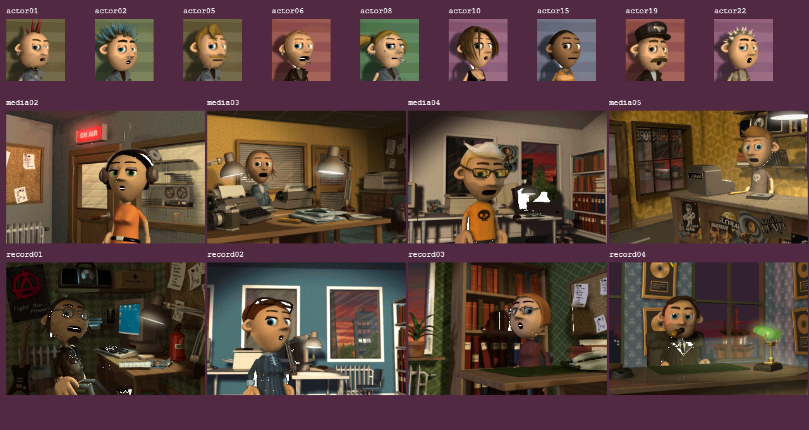
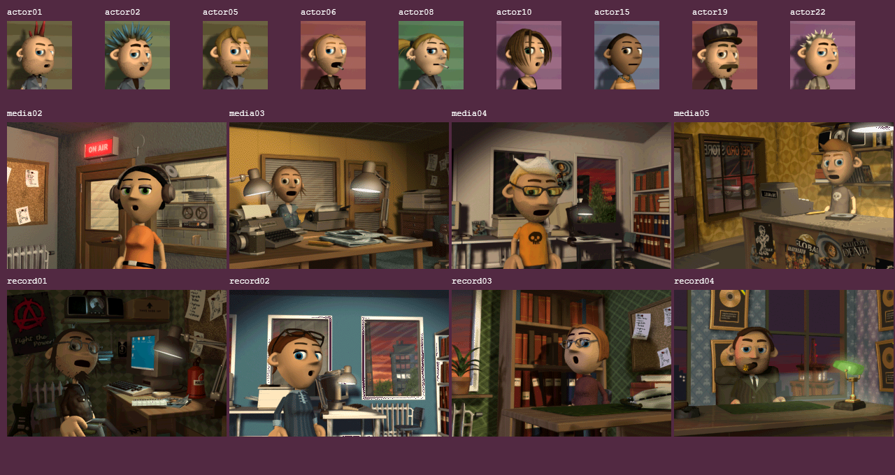

The previous exterior-only matte preserved enclosed white pixels. The original live face sprites use ink36: every matching white pixel is transparent.
| Actual WebGL sweep:17 characters ×80 speech samples | Before | After |
|---|---|---|
| Worst sample:unexpected white pixels | 1,732 | 0 |
| Total unexpected white pixel observations | 133,919 | 0 |
The matched first captures below use the same production portrait component, source cue sample and RGB555 output. An independent native score audit records the source transparency settings. These checks cover imported animation frames and sampled playback; the complete original body/blink state machine remains unfinished.


Source and verification notes · Original sprite records · Before measurements · After measurements